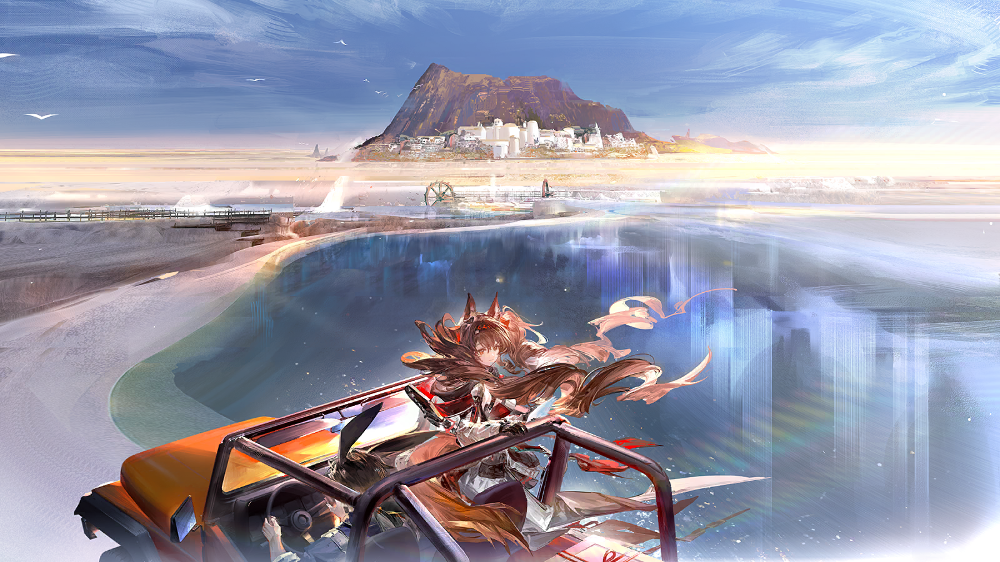

亲爱的玛蒂娜：
我犹豫了很久，不知道该不该给你写信。
自从那个雨夜，你向我伸出手，将我引上信使这条路之后，我一直非常感激，很想当面向你表达我的感谢。
可由于种种阴差阳错，我们总是没法见面，对此我一直都觉得很伤心。
实话实说，这次给你写信，你的地址都是我在游历过程中打听来的，不知道拼写是否准确，我甚至是在查阅地图后才确定了地址的真实性。
但我的确有话想对你说。
我现在在为罗德岛工作，你可能听过这个名字，他们是一家很好很好的医药公司，那里现在就是我的家，是我最重要的地方。
我只是有一个以前明明觉得很简单，现在却越来越不明白了的问题......
对罗德岛而言，对这片大地而言，对信使安洁莉娜而言......
我的位置究竟在哪里？
？？？
呼......呼......这车轮可陷得够深的啊......
？？？
我要不还是下来帮您吧？
？？？
不用不用，需要有个人控制方向盘，而且小姑娘你的源石技艺也能让越野车变得轻一点儿。
？？？
可别小看下矿五年的老矿工！喝——！
？？？
动了——车动了！
？？？
哎哎哎，小姑娘你别停止施术啊，车要溜坡了！快点火，发动引擎！
？？？
好、好！

好心的路人
哈哈！还真让我想起了上个月矿井起火，逃生通道又被矿车卡住的时候。
好心的路人
要是当时不拼命，我现在可就帮不了你，也没办法回家见刚出生的孩子啦。
？？？
呃......我遇到的问题跟您遇到的比起来，可小太多了......
好心的路人
欸，话不能这么说。
好心的路人
姑娘，你是要去大涌泉镇是不？那你就是我们的客人！你的困难就是我的困难，安......呃......你叫什么来着？

安洁莉娜
我叫安洁莉娜，安心院安洁莉娜，是罗德岛的信使。

安洁莉娜
欸？大涌泉镇没有收到解密器？
工程部干员
是的，我们刚刚收到大涌泉镇罗德岛办事处的数据分析干员皮塔的回函。

安洁莉娜
罗德岛总部到雷姆必拓的路程至少要走四十五天，我记得解密器的包裹上我还特地标注了加急运送，好像是因为数据解密有时效？
工程部干员
对。本应送到的解密器对应的是我们在雷姆必拓南境采集到的数据。
工程部干员
自去年夏天，泰拉遭受源石异常活动影响以来，我们在大气源石浓度变化最显著的雷姆必拓南境建造了数据采集站。
工程部干员
采集到的源石浓度数据会借由雷姆必拓新研发的远程通讯技术，传送到大涌泉镇的罗德岛办事处进行数据解密和研究。
工程部干员
整理好的研究结论再依靠信使带回没有远程通讯的罗德岛，经可露希尔的测算，这样在成本和安全性上大概可以取得平衡。
安洁莉娜
这个包裹理应是我在三个月前分拣送寄的时候处理的。
工程部干员
近半年跑过雷姆必拓的信使我都问过了，没人拿到过那个包裹。

安洁莉娜
那......包裹是在分拣送寄的时候搞丢的？是我出了问题，所以才......
安洁莉娜
......
工程部干员
哎呀，总部与泰拉各地的信件往来太多，货物流通量也大，搞错是难免的——使用预案就是准备预案的价值所在嘛！
安洁莉娜
预案？
工程部干员
就是让可露希尔做个一模一样的解密器啦。原来那个也不用担心，就是个解密插件，寄错了也不会有泄密风险。
工程部干员
要不是你正好听到我在处理这件事，我都不会特地告诉你的啦......

安洁莉娜
那......这个解密器也要送到大涌泉镇，对吗？
工程部干员
这倒是肯定的——
安洁莉娜
让我去送吧。
工程部干员
你最近不是刚跑了一趟哥伦比亚吗？而且外勤部的同事说你这一阵子一有空就泡在训练室里......
工程部干员
这真的只是个小问题，不用那么放在心上的。
安洁莉娜
可能的确有点小题大做，不过，为了不让问题发生第二次，亲手将包裹送到目的地，这也是信使的责任嘛。
工程部干员
哈哈，不愧是罗德岛最可靠的信使之一！我这就联系可露希尔，问她这趟让你去行不行。
工程部干员
她说完全没问题。
安洁莉娜
太好了。
安洁莉娜
让我想想，这趟需要雷姆必拓的地图、活性源石粉尘防护装备......
安洁莉娜
还有还有！我听说雷姆必拓有适合全地形的运载车，这样一来，我自己的车是不是也要......
工程部干员
包在我身上！
安洁莉娜
我这次来大涌泉镇是为了找罗德岛办事处负责数据分析的皮塔，您认识她吗？
好心的路人
啊~安心院安洁莉娜......原来是安心院安洁莉娜！

安洁莉娜
皮塔小姐提起过我？

安洁莉娜
她是不是责怪我没有按时——
好心的路人
好名字啊！

安洁莉娜
欸欸？
好心的路人
对啊！安心院安洁莉娜......可爱，特别，跳出了常规的起名范式！
好心的路人
今天能在零号公路上遇到你真是我天大的运气，你一定要给我们家刚出生的小提摩西起名！

安洁莉娜
我以为......您家的小提摩西......就叫小提摩西？
好心的路人
那只是个昵称罢了，起正式名在我们镇可是很重要的事！
好心的路人
就拿我自己说吧，我叫巴尼特，上学的时候，班上除了我还有四个巴尼特。
巴尼特
除此之外，还有两个巴尼蒂娜、三个巴尼提奥、三个巴尼松、一个巴尼二世、一个巴尼三世......还有十一个巴尼！

安洁莉娜
为、为什么？
巴尼特
镇子就那么大，日子也没变化，孩子生得又多，好听好记寓意又好的名字，可不就抢手了嘛。
巴尼特
你等着啊，我现在就跟家里人知会一声，有个起名高手要拜访大涌泉镇了！
巴尼特
（打开终端）
巴尼特
（盯着终端）
巴尼特
（关上终端）
安洁莉娜
巴尼特先生发信息的速度......好快？
巴尼特
不是，是我一高兴就忘了，大断连之后只剩下原先的城际网络可以用了......
安洁莉娜
大断连？
巴尼特
但是没关系！反正这儿离大涌泉镇已经很近了。安洁莉娜，实在不好意思，能不能麻烦你捎我一段路？
安洁莉娜
当然可以了，我还没有答谢您帮忙推车呢！不过您刚刚说的大断连是指——
巴尼特
不是什么大事。话说回来，你这车真不赖，比运载车小巧却还能在这受过灾的公路上跑......这是适应全地形的改装车吧？
安洁莉娜
是的。这次上路前，我在罗德岛工程部的朋友特地帮我改造了我平时开的越野车！
巴尼特
安洁莉娜，我知道提这个要求可能有点过分。但我开了很多年车了，还熟悉去大涌泉镇的路，你......呃......你能不能......
巴尼特
嘿嘿......雷姆必拓的运载车虽然安全，但可没办法像你的车这样把顶棚敞开。在行驶的路上感受四面环绕的风......太浪漫了！
安洁莉娜
噗，您不用再解释了，没问题的。
巴尼特
太好了！
巴尼特
小心啊，车要小颠簸一下。前面有个小坑，是在四五年前被源石风暴砸出来的。
安洁莉娜
好、好。
巴尼特
还没结束，这一段路接下来的一百多米都断了，要从荒原里绕路走，轮胎下面都是碎石子，可能会有哦哦哦——
巴尼特
有哦哦哦——点、点、点——抖！
安洁莉娜
明、明、明白——！
巴尼特
呼，总算过来了。前面的路是我们大涌泉镇的人自己维护的，路况会好很多。

安洁莉娜
上次来雷姆必拓的时候我就好奇，为什么雷姆必拓遭受天灾的频率比其他地区更高，却还是修建了零号公路？
巴尼特
因为，比起说我们修建了零号公路，不如说天灾只给我们留下了唯一一种修建公路的可能。
巴尼特
以前部落和部落之间只有一两条没被源石彻底砸烂的路可以走，它们是零号公路的前身。
巴尼特
直到第一次大移民之后，外来的开拓者带来人力和技术，修整了那些土路并将它们连接了起来，才有了“零号公路”这个名字。
巴尼特
不过，哪怕有人自发维护，公路的路况依旧受到了天灾影响。
巴尼特
后来，源石工业逐渐发达，小型移动平台越来越多，适应全地形的运载车也投入使用，就用不上这条破破烂烂的公路了。
巴尼特
现在啊，它也就起个指路的作用。
安洁莉娜
指路？
巴尼特
对啊。大涌泉镇是零号公路最北端的起点，而它的终点在几乎无人涉足的南境。
巴尼特
也不知道当时为什么要把路修到那么偏僻的地方去。
安洁莉娜
南境......罗德岛建立的源石浓度数据采集站就在那里......
巴尼特
在南境建东西？哟，那看来你们公司还挺厉害的。上一个在雷姆必拓各地建东西的还是纵贯红土公司。
安洁莉娜
纵贯红土公司......我好像知道，他们就是雷姆必拓远程通讯技术的运营商？
巴尼特
是啊，去年夏天的时候他们到处建通讯塔，大涌泉镇里也有一座。
巴尼特
一开始我们都不知道建那么高的通讯塔有什么用——其实到现在还有一些上了年纪的，或者不怎么出门的人不知道远程通讯的好处。
巴尼特
不过嘛，现在无所谓了。
安洁莉娜
无所谓了？难道是因为您之前说的——
巴尼特
啊，我想起来了！安洁莉娜，你之前是不是说自己是来找人的？

安洁莉娜
对！您认识一个叫皮塔的人吗？她是罗德岛办事处的数据分析员。
巴尼特
唔......不认识。
安洁莉娜
好吧......谢谢您。
巴尼特
不过我能帮你准备一些冰镇胡萝卜汁。
安洁莉娜
请人喝胡萝卜汁是大涌泉镇的习俗吗？
巴尼特
不不不，我的意思是，镇上叫皮塔的没有一百也有五十，你一定会累得嗓子冒烟的。

安洁莉娜
哈......
巴尼特
不过我说不定可以找我的小侄女帮忙？她可是大涌泉镇里的金牌接线员......
巴尼特
先不提那些了——我们快要到了！安洁莉娜，你往远处看！
背靠高耸的红色山岩，一座洁白恬静的小镇出现在他们的眼前。
摇晃的花朵和结满浆果的树丛填满了建筑与建筑之间的缝隙，热情地迎接每一个远道而来的家人和客人。
红色的水车悠闲地转着，把晶莹剔透的蓝色湖水源源不断地运进身后的小镇，蒸腾的热气萦绕在两人的周围。
安洁莉娜
这片湖是......温泉？
巴尼特
哈哈哈哈，不然这里为什么要叫大涌泉镇呢？
巴尼特
我们这没有什么矿产，但就是温泉多。无论春夏秋冬，跳下去就能洗个舒舒服服的热水澡。
巴尼特
也是借了温泉的风头，我们镇成了知名的疗养地，周围也开设了不少度假中心。
巴尼特
要不是因为我家的孩子实在太多，光靠在镇上的收入负担不起，必须去矿场工作维生，我真想一辈子待在这个地方。
安洁莉娜
是啊，它看上去是最完美的，家的样子......
巴尼特
不过，它还是有一个缺点的。

安洁莉娜
欸！我的包裹——
风中的花香和湿气让人不由自主地遗忘，雷姆必拓的风仍然拥有雕琢荒地的力量。
一路秉持着安全驾驶规则的越野车，在雷姆必拓人的手下飞驰起来。
风和速度不会过问车厢中的信件是不是想要检查一下自己的“安全带”是否牢固。
它们慌乱地在空中飞舞着，阳光下，信封上的一个个名字都闪闪发亮......
难道还没有说出自己的“心意”，它们就会消失在这片荒野之中？
所幸，它们可靠的信使恰巧能够追回一切......
安洁莉娜
等等——！

巴尼特
哈哈哈，没想到你的源石技艺还能让信飞回你的手里啊！那你是不是也能让自己飞起来？
安洁莉娜
飞起来是没问题啦！
安洁莉娜
但我就算是飞起来，也不会有您开车开得这么快呀！
巴尼特
哈哈哈哈哈！

疲惫的接线员
您好，这里是大涌泉镇接线中心，请问您找谁？
电话里的声音
塔妮，你帮我再接回去，我今天必须要跟他理论清楚！

塔妮
（叹气）梅拉女士，我不觉得纪念日晚上点十根蜡烛和一百根蜡烛有什么区别。
梅拉
塔妮，你还小，没有到我这个年纪，如果你知道我和罗克的故事，你肯定就懂我现在的心情了！

塔妮
我知道，你们从小就认识，他对你的第一次表白是在你们十二岁的时候，地点在商店街。
塔妮
之后他因为家里的生意去了钢铁萝卜城，你等了他整整五年，五年之后你们很快就结了婚。
塔妮
结了婚以后的你们五天一小吵十天一大吵，但每次你们吵得有多欢，和好之后就有多恩爱。

塔妮
（快速喝口水）总之，梅拉女士，我希望你能长话短说——
梅拉
唉，我就是想说，我们夫妻度过的这十个年头实在太不容易了。你觉得我应该在什么时候跟他打电话比较好？
塔妮
下班以后。
梅拉
不行，不行，那也太晚了！万一这次我或者罗克想不通，我们一气之下离婚，那可怎么办啊！
塔妮
......不可能的。
梅拉
塔妮，再怎么样，我也是你小姨的亲哥哥的表姐啊，罗克也是你小姨的亲哥哥的表姐夫啊！
梅拉
唉，现在想想，我们为什么要为点多少根蜡烛吵架呢？罗克说得也有道理，他奶奶过生日都没有点过这么多蜡烛......
梅拉
可我就是想着，就算是十周年纪念日，我也想我们互相陪伴更久，二十年，三十年，一百年......
电话里男人的声音
亲爱的......原来你是这么想的？
梅拉
罗克？！塔妮，你、你是什么时候转接的线？

塔妮
（叹气）别问了，反正这样最能解决问题。
罗克
梅拉，不管怎样，我最亲爱的，你的想法我全都了解了。咱们就按你说的办，不点十根蜡烛，就点一百根！
梅拉
好......
梅拉
亲爱的，你辛苦了，你先挂电话吧......
罗克
不，上次电话是我冲动挂掉的，这次你来吧......

塔妮
你们究竟有没有听我说话——
梅拉
不，你先挂......
罗克
没事，你先......
塔妮
谢谢你们的来电，祝你们生活愉快！

塔妮
唉，这样的日子什么时候才是个头啊......
塔妮再次把身子贴在了桌子上，虽然已经挂断了电话，但她依然觉得脑中有两只羽兽不停地叽叽喳喳。
塔妮
加油，塔妮，坚持住。
塔妮
这是你最后一天当接线员了。最后一天！

塔妮
（深呼吸）您好，大涌泉镇接线中心。请问您找谁？
巴尼特
塔妮，你最近怎么样呀？
塔妮
......挺好的。
巴尼特
叔叔给你讲个有趣的事！
巴尼特
这次在矿场我跟伙计们学了不少健身方法。我想着你的表妹出生了，我得陪她久一点，所以就从矿场徒步回家......

塔妮
巴尼特叔叔，这里是接线室。
巴尼特
唉，你瞧我。不过我马上就讲到正事了，马上马上。
巴尼特
反正就是，我在镇外遇上了一个陷车了的信使，名字很有趣的，是叫......呃......欸？你自己来？好好，没问题——
巴尼特
时候确实也不早了，我也该回家了。有空记得帮我想想我家小提叫什么啊，拜托了！
塔妮
......
塔妮
喂？还有人吗？
安洁莉娜
塔妮小姐你好，我是安洁莉娜。

塔妮
安洁莉娜小姐，你找谁？
安洁莉娜
我找皮塔，罗德岛办事处的皮塔。
塔妮仰着头想了一会儿，叹了口气，捏了捏自己的鼻子。
塔妮
交换器上有一大堆皮塔，一个一个找过去很费劲的。

塔妮
罗德岛是做什么的？
安洁莉娜
一家医疗机构，专门负责矿石病防治的。
塔妮
大涌泉镇里全都是号称能缓解矿石病的疗养院和医疗机构。有什么别的信息吗？那个皮塔长什么样？住在哪个区域？
安洁莉娜
呃......我不太清楚......
塔妮
唉。
塔妮的脚下意识地在地上轻点起来，她眯着眼睛在交换机上一行一行地寻找“罗德岛”的字样。
安洁莉娜
塔妮小姐，我从巴尼特先生那里听说，最近好像有“大断连”这么一回事——
塔妮
......找到罗德岛的皮塔了。我帮你接过去。
安洁莉娜
多谢你，塔妮小姐！
塔妮
不谢。

塔妮
呼......
塔妮
......呃，我怎么又开始跺脚了。上次刚因为跺脚惹妈妈生气来着。

塔妮
但是都不要紧，过了今天我就十八岁了，可以跟交换机和接线室说再见了——
塔妮
嗯？那个安洁莉娜不是说要接罗德岛的皮塔吗？插头明明插在“罗德岛的皮塔”这里，亮的怎么是“路障哥皮塔”？
塔妮
怪了，让我听听......
安洁莉娜
......对的，除了解密器，还有一批药物——
流里流气的男声
那就没错那就没错！这批药我们可等好久了，快送过来快送过来！
安洁莉娜
呃......好的？
怪腔怪调的女声
*富有个性的怪叫声*，终~于来了，来了来了来了，勒柄嘘混，我的勒柄嘘混......
安洁莉娜
（勒柄嘘混？）
安洁莉娜
那、那我就先过去了。
流里流气的男声
噢！不见~不散！

塔妮
——糟了！